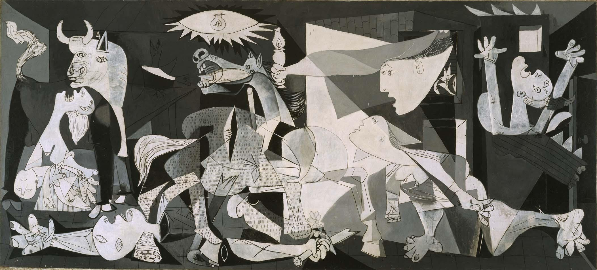

Guernica is a large 1937 oil painting by Spanish artist Pablo Picasso. It is one of his best-known works, regarded by many art critics as the most moving and powerful anti-war painting in history. It is exhibited in the Museo Reina Sofía in Madrid. The grey, black, and white painting, on a canvas 3.49 meters (11 ft 5 in) tall and 7.76 meters (25 ft 6 in) across, portrays the suffering wrought by violence and chaos. Prominent in the composition are a gored horse, a bull, screaming women, a dead baby, a dismembered soldier, and flames. Picasso painted Guernica at his home in Paris in response to the 26 April 1937 bombing of Guernica, a Basque Country town in northern Spain that was bombed by Nazi Germany and Fascist Italy at the request of the Spanish Nationalists. Upon completion, Guernica was exhibited at the Spanish display at the 1937 Paris International Exposition, and then at other venues around the world. The touring exhibition was used to raise funds for Spanish war relief. The painting soon became famous and widely acclaimed, and it helped bring worldwide attention to the 1936-1939 Spanish Civil War.
